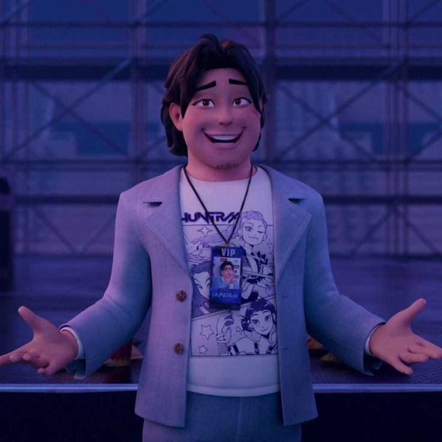

Back to Characters

Bobby
巴比
Bābǐ
Human
Character Information
- Gender: Male
- Species: Human
- Occupation: HUNTR/X's manager
Relationships
- Mira: artist he manages and supports;
- Rumi: artist he manages and supports;
- Zoey: artist he manages and supports.
Description
Chinese Vocabulary
- 经纪人 (jīngjìrén) - manager
- 工作 (gōngzuò) - job/ to work
- 音乐排行榜 (yīnyuè páihángbǎng) - musical chart
- 赞助商 (zànzhùshāng) - sponsor